| Your need | Survey | First agenda | This agenda |
|---|---|---|---|
| Agentic workflows | rank 1 · 2.7 | 75 · Day 2 | 110 · Day 1 |
| Ticket to specification | rank 3 · 3.4 | approx. 180 | 75 |
| Tests, review, CI | rank 5 · 10/14 | 75 | 90 |
| Large codebases, documentation | 2.9 · 7/14 | 0 | 60 |
| Peer exchange: your setups on screen | 13/14 daily users | – | 45 + tandems |
| Time | Module | Hands-on | From your survey |
|---|---|---|---|
| 09:30 – 10:15 | 1Where you standLine-up · your setups · tandems | Stand on your level. Three of you show how you work today, on screen; the others ask. We form tandems of more and less experienced colleagues, ideally from the same team. Setup check runs alongside.Your own setups | 13 of 14 use Cursor daily · 12 use rules · 7 run agents in parallel Not everyone answered: the line-up shows where all of you stand |
| 10:15 – 11:30 | 2From ticket to validated specShared case · elicit · specify · validate | One shared fictional ticket for everyone (pricing-demo: volume tiers across two views). The Cursor analyst skill asks at most five questions one at a time, spec-kit writes the spec, /elicit deep-dives it with BMAD methods, then three read-only Goldfish subagents review spec and plan. You decide, revise, validate again.Analyst · /elicit · spec-kit · Goldfish | Agent misreads the requirement: 5 of 14 Long chats lose details: 9 of 14 · tickets to specs: rank 3 |
| 11:30 – 11:40 | Coffee break | ||
| 11:40 – 12:30 | 3Agentic workflows I: split and delegateYour top topic, on Day 1 | The validated spec becomes a task list. Two tasks that touch different files, one agent and one worktree each. You integrate and check the signs that delegation is failing.Tasks · worktrees · subagents | Agentic workflows: rank 1 (mean 2.29) Delegating multi-step tasks: confidence 2.7 of 4 |
| 12:30 – 13:30 | Lunch | Canteen. | |
| 13:30 – 14:30 | 4Agentic workflows II: patternsBest of N · cloud agents | Same task, several agents or models in worktrees: pick the best and say why. When a subagent pays off, when it only costs tokens. Cloud agents for side tasks, shown.Worktrees · subagents · cloud agents | Orchestrating several agents (free text) Over-engineered AI code (free text) |
| 14:30 – 15:30 | 5Audit your existing setupBring your own rules | Check your rules, AGENTS.md and skills: what is always loaded, what contradicts, what belongs in a skill. Turn one long rule into a skill. Show your findings, so we can adjust Day 2.Rules · AGENTS.md · Skills | Code breaks architecture or conventions: 8 of 14 Context and rules: rank 2 · validate the existing harness (free text) |
| 15:30 – 15:45 | Coffee break | ||
| 15:45 – 16:45 | 6Guardrails & MCPSafe autonomy | Write one hook for your project. Inventory your MCP connections: which tools write, which token they use. Spot an instruction hidden in tool output.Modes · hooks · MCP | Security and policy limits: 4 of 14 MCP: rank 4 · MCP security (free text) |
| 16:45 – 17:00 | Wrap-up Day 1 | Biggest insight, one thing to try tonight. Open policy questions go to your security owner. | Not sure what is permitted: 2 of 14 |
| Time | Module | Hands-on | From your survey |
|---|---|---|---|
| 09:30 – 09:45 | Check-in & recap | What did you try last night? Tandems checked and, if needed, regrouped by team. | |
| 09:45 – 10:45 | 7Map of your codebaseIndexed is not understood | The agent writes a one-page map of a module of your repository, including your conventions. A Goldfish checks the map against the code. Links into a second repository.Subagents · context files · .cursorignore | Large, unfamiliar codebases: confidence 2.9 of 4 Documentation: 7 of 14 · several repositories: 6 |
| 10:45 – 11:00 | Coffee break | ||
| 11:00 – 12:30 | 8Tests, review & CIMerge requests you can review | Test first: tests fail for the right reason before any code. Review a large AI merge request against its plan. Build your own reviewer from a Goldfish, grounded in your codebase map. What belongs in the pipeline.Tests · subagents · skills | Tests: 10 of 14 want to improve · reviewing AI code: 2.7 Merge requests with 70–80 files · a reviewer of your own (free text) |
| 12:30 – 13:30 | Lunch | Canteen. | |
| 13:30 – 15:00 | MSI team meeting | Workshop paused for your internal meeting. Back at 15:00 for your tickets. | |
| 15:00 – 16:15 | 9Your tickets in tracksYou choose | Your own ticket through the whole loop (75 min). Tracks: refactoring with tests before the change · test automation · debugging with a hypotheses file, including Kubernetes and Flux, read-only · feature. Done when: reviewed plan, tests that failed then passed, small diff.All building blocks combined | Refactoring: 8 of 14 · debugging: 8 of 14 · tests: 10 Legacy code · QA engineers in the group |
| 16:15 – 16:40 | Show & reviewTandems present | Tandems show their spec, Goldfish findings and diff in 3 minutes sharp. What worked, what did not. | Learn from each other |
| 16:40 – 17:00 | Team setup, 30-day plan & feedbackTransfer · close | Owners for a shared setup, one number you measure now and in four weeks, level before and after, feedback survey.Team Rules · shared skills · hooks | Convincing sceptics with evidence (free text) |